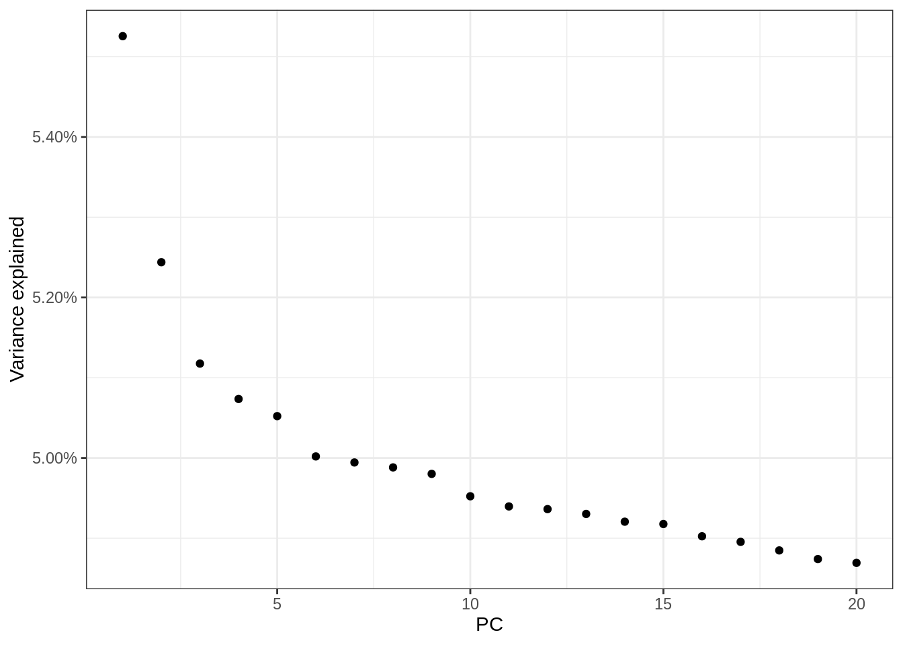

Last updated: 2021-11-26
Checks: 7 0
Knit directory: snRNA_eqtl/
This reproducible R Markdown analysis was created with workflowr (version 1.6.2). The Checks tab describes the reproducibility checks that were applied when the results were created. The Past versions tab lists the development history.
Great! Since the R Markdown file has been committed to the Git repository, you know the exact version of the code that produced these results.
Great job! The global environment was empty. Objects defined in the global environment can affect the analysis in your R Markdown file in unknown ways. For reproduciblity it’s best to always run the code in an empty environment.
The command set.seed(20211124) was run prior to running the code in the R Markdown file. Setting a seed ensures that any results that rely on randomness, e.g. subsampling or permutations, are reproducible.
Great job! Recording the operating system, R version, and package versions is critical for reproducibility.
Nice! There were no cached chunks for this analysis, so you can be confident that you successfully produced the results during this run.
Great job! Using relative paths to the files within your workflowr project makes it easier to run your code on other machines.
Great! You are using Git for version control. Tracking code development and connecting the code version to the results is critical for reproducibility.
The results in this page were generated with repository version 0ab5840. See the Past versions tab to see a history of the changes made to the R Markdown and HTML files.
Note that you need to be careful to ensure that all relevant files for the analysis have been committed to Git prior to generating the results (you can use wflow_publish or wflow_git_commit). workflowr only checks the R Markdown file, but you know if there are other scripts or data files that it depends on. Below is the status of the Git repository when the results were generated:
Ignored files:
Ignored: .Rproj.user/
Ignored: data_sensitive/
Untracked files:
Untracked: output/Figures/
Untracked: related_ind_to_remove.txt
Unstaged changes:
Modified: .gitignore
Modified: analysis/_site.yml
Note that any generated files, e.g. HTML, png, CSS, etc., are not included in this status report because it is ok for generated content to have uncommitted changes.
These are the previous versions of the repository in which changes were made to the R Markdown (analysis/00_process_genotypes.Rmd) and HTML (docs/00_process_genotypes.html) files. If you’ve configured a remote Git repository (see ?wflow_git_remote), click on the hyperlinks in the table below to view the files as they were in that past version.
| File | Version | Author | Date | Message |
|---|---|---|---|---|
| Rmd | 0ab5840 | Julien Bryois | 2021-11-26 | Publish genotype processing + initial files |
Load libraries
library(tidyverse)
library(SingleCellExperiment)Set path for genotype data
Sys.setenv(geno_path='data_sensitive/genotypes')We need to merge the genotypes coming from the genotyping array (AD + MS Roche Cohort) with the whole genome genotypes from the ROSMAP cohort.
Samples from the AD and MS Roche dataset were genotyped using a GSA array and imputed with the HRC reference panel.
We remove SNPs with more than 5% missing genotypes, as well as individuals with more than 2% missing genotypes.
Finally, we remove any SNP with MAF<0.01.
cd $geno_path
module load PLINK/1.90-goolf-1.7.20
#remove SNPs with more than 5% missing genotypes
plink --bfile RES0103_GSAv3+_imputed_HRC --geno 0.05 --allow-no-sex --allow-extra-chr --make-bed --out RES0103_GSAv3+_imputed_HRC_1
#remove individuals with more than 2% missing genotypes
plink --bfile RES0103_GSAv3+_imputed_HRC_1 --mind 0.02 --maf 0.01 --allow-no-sex --allow-extra-chr --make-bed --out RES0103_GSAv3+_imputed_HRC_2Set SNP position as name if the SNP name is ‘.’
cd $geno_path
ml PLINK/1.90-goolf-1.7.20
awk '{if($2 == ".") {OFS = "\t "; print $1,"chr"$1":"$4"_"$5"_"$6,$3,$4,$5,$6} else {print $0}}' ROSMAP_DLPFC_snRNAseq_GRCh38_liftedover_sorted_all.bim > tmp
mv tmp ROSMAP_DLPFC_snRNAseq_GRCh38_liftedover_sorted_all.bimWe remove SNPs with more than 5% missing genotypes, as well as individuals with more than 2% missing genotypes.
Finally, we remove any SNP with MAF<0.01.
cd $geno_path
ml PLINK/1.90-goolf-1.7.20
#remove SNPs with more than 5% missing genotypes
plink --bfile ROSMAP_DLPFC_snRNAseq_GRCh38_liftedover_sorted_all --geno 0.05 --allow-no-sex --allow-extra-chr --make-bed --out ROSMAP_DLPFC_snRNAseq_GRCh38_liftedover_sorted_all_1
#remove individuals with more than 2% missing genotypes
plink --bfile ROSMAP_DLPFC_snRNAseq_GRCh38_liftedover_sorted_all_1 --mind 0.02 --maf 0.01 --allow-no-sex --allow-extra-chr --make-bed --out ROSMAP_DLPFC_snRNAseq_GRCh38_liftedover_sorted_all_2#load rosmap bim file
rosmap <- data.table::fread('data_sensitive/genotypes/ROSMAP_DLPFC_snRNAseq_GRCh38_liftedover_sorted_all_2.bim',header = FALSE,data.table=FALSE) %>% setNames(c('chr','snp_rosmap','unclear_rosmap','pos','A1_rosmap','A2_rosmap'))
#load gsa bim file
gsa <- data.table::fread('data_sensitive/genotypes/RES0103_GSAv3+_imputed_HRC_2.bim',header = F,data.table = FALSE) %>% setNames(c('chr','snp_gsa','unclear_gsa','pos','A1_gsa','A2_gsa'))Add gsa genotype data for same chromosome and same position
rosmap_merged <- rosmap %>%
left_join(.,gsa,by=c('chr','pos'))Get allele combination possibilities
rosmap_merged <- mutate(rosmap_merged,
allele_combination_gsa=paste0(A1_gsa,A2_gsa),
allele_combination_gsa_rev=paste0(A2_gsa,A1_gsa),
allele_combination_rosmap=paste0(A1_rosmap,A2_rosmap))Get opposite strand alleles
rosmap_merged <- rosmap_merged %>% mutate(allele_combination_gsa_opposite_strand=case_when(
allele_combination_gsa=='AT' ~ 'TA',
allele_combination_gsa=='AC' ~ 'TG',
allele_combination_gsa=='AG' ~ 'TC',
allele_combination_gsa=='CA' ~ 'GT',
allele_combination_gsa=='CT' ~ 'GA',
allele_combination_gsa=='CG' ~ 'GC',
allele_combination_gsa=='TA' ~ 'AT',
allele_combination_gsa=='TC' ~ 'AG',
allele_combination_gsa=='TG' ~ 'AC',
allele_combination_gsa=='GA' ~ 'CT',
allele_combination_gsa=='GT' ~ 'CA',
allele_combination_gsa=='GC' ~ 'CG',
TRUE ~ 'unknown'
))rosmap_merged <- rosmap_merged %>% mutate(allele_combination_gsa_opposite_strand_rev=case_when(
allele_combination_gsa=='AT' ~ 'AT',
allele_combination_gsa=='AC' ~ 'GT',
allele_combination_gsa=='AG' ~ 'CT',
allele_combination_gsa=='CA' ~ 'TG',
allele_combination_gsa=='CT' ~ 'AG',
allele_combination_gsa=='CG' ~ 'CG',
allele_combination_gsa=='TA' ~ 'TA',
allele_combination_gsa=='TC' ~ 'GA',
allele_combination_gsa=='TG' ~ 'CA',
allele_combination_gsa=='GA' ~ 'TC',
allele_combination_gsa=='GT' ~ 'AC',
allele_combination_gsa=='GC' ~ 'GC',
TRUE ~ 'unknown'
))If the alleles of ROSMAP data match the one from the gsa genotype (on any strand), set the name of the position to the GSA genotype name for the ROSMAP data, otherwise, keep the ROSMAP SNP name
rosmap_merged <- rosmap_merged %>% mutate(SNP_name_rosmap=case_when(
(allele_combination_rosmap == allele_combination_gsa) |
(allele_combination_rosmap == allele_combination_gsa_rev) |
(allele_combination_rosmap == allele_combination_gsa_opposite_strand) |
(allele_combination_rosmap == allele_combination_gsa_opposite_strand_rev) ~ snp_gsa,
TRUE ~ snp_rosmap
))rosmap_bim_new_name <- rosmap_merged %>%
dplyr::select(snp_rosmap,SNP_name_rosmap) %>%
unique() %>%
as_tibble()Remove SNPs with the same name
duplicated_original_name <- rosmap_bim_new_name$snp_rosmap[duplicated(rosmap_bim_new_name$snp_rosmap)]
duplicated_new_name <- rosmap_bim_new_name$SNP_name_rosmap[duplicated(rosmap_bim_new_name$SNP_name_rosmap)]rosmap_bim_new_name <- rosmap_bim_new_name %>% filter(!snp_rosmap%in%duplicated_original_name,!SNP_name_rosmap%in%duplicated_new_name)write_tsv(rosmap_bim_new_name,'data_sensitive/genotypes/rosmap_snp_names_to_update.txt',col_names=FALSE)Now update names for the ROSMAP data
cd $geno_path
ml PLINK/1.90-goolf-1.7.20
#Get duplicated ids (same pos, same alleles)
awk '{print$2}' ROSMAP_DLPFC_snRNAseq_GRCh38_liftedover_sorted_all_2.bim | sort |uniq -d > rosmap_SNPs.dups.txt
awk '{print$2}' RES0103_GSAv3+_imputed_HRC_2.bim | sort |uniq -d > gsa_SNPs.dups.txt
cat rosmap_SNPs.dups.txt gsa_SNPs.dups.txt | sort -u > dups.txt
#Remove duplicated SNPs
plink --bfile ROSMAP_DLPFC_snRNAseq_GRCh38_liftedover_sorted_all_2 --exclude dups.txt --allow-no-sex --allow-extra-chr --make-bed --out ROSMAP_DLPFC_snRNAseq_GRCh38_liftedover_sorted_all_3
#update names of ROSMAP data with GSA genotype name when position and allele match
plink --bfile ROSMAP_DLPFC_snRNAseq_GRCh38_liftedover_sorted_all_3 --update-name rosmap_snp_names_to_update.txt --allow-no-sex --allow-extra-chr --make-bed --out ROSMAP_DLPFC_snRNAseq_GRCh38_liftedover_sorted_all_4Keep SNP on chromosome 1-22 that are present in both datasets, and not duplicated in any datasets
dups <- read_tsv('data_sensitive/genotypes/dups.txt',col_names = F)rosmap <- data.table::fread('data_sensitive/genotypes/ROSMAP_DLPFC_snRNAseq_GRCh38_liftedover_sorted_all_4.bim',header = FALSE,data.table=FALSE) %>% setNames(c('chr','snp_rosmap','unclear_rosmap','pos','A1_rosmap','A2_rosmap')) %>%
filter(chr%in%c(1:22))
gsa <- data.table::fread('data_sensitive/genotypes/RES0103_GSAv3+_imputed_HRC_2.bim',header = F,data.table = FALSE) %>% setNames(c('chr','snp_gsa','unclear_gsa','pos','A1_gsa','A2_gsa')) %>%
filter(chr%in%c(1:22))common_snp <- intersect(rosmap$snp_rosmap,gsa$snp_gsa) %>% unique()common_snp_no_dups <- common_snp[!common_snp%in%dups$X1]write_tsv(as.data.frame(common_snp_no_dups),'data_sensitive/genotypes/snps_1_22_common_no_dups.txt',col_names = FALSE)Filter ROSMAP and GSA data set to only keep common SNPs
cd $geno_path
ml PLINK/1.90-goolf-1.7.20
#ROSMAP
plink --bfile ROSMAP_DLPFC_snRNAseq_GRCh38_liftedover_sorted_all_4 --extract snps_1_22_common_no_dups.txt --allow-no-sex --allow-extra-chr --make-bed --out ROSMAP_DLPFC_snRNAseq_GRCh38_liftedover_sorted_all_5
#GSA
plink --bfile RES0103_GSAv3+_imputed_HRC_2 --extract snps_1_22_common_no_dups.txt --allow-no-sex --allow-extra-chr --make-bed --out RES0103_GSAv3+_imputed_HRC_3Here we will merge the genotype datasets and check for potential issues
cd $geno_path
ml PLINK/1.90-goolf-1.7.20
# Prior to merging, we want to make sure that the files are mergeable, for this we conduct 3 steps:
# 1) Make sure the reference genome is similar
# 2) Resolve strand issues.
# 3) Remove the SNPs which after the previous two steps still differ between datasets.
# The following steps are maybe quite technical in terms of commands, but we just compare the two data sets and make sure they correspond.
# 1) set reference genome
awk '{print$2,$5}' RES0103_GSAv3+_imputed_HRC_3.bim > ref-list.txt
plink --bfile ROSMAP_DLPFC_snRNAseq_GRCh38_liftedover_sorted_all_5 --reference-allele ref-list.txt --make-bed --out ROSMAP_DLPFC_snRNAseq_GRCh38_liftedover_sorted_all_6
# The files now have the same reference genome for all SNPs.
# This command will generate some warnings for impossible A1 allele assignment.
# 2) Resolve strand issues.
# Check for potential strand issues.
awk '{print$2,$5,$6}' RES0103_GSAv3+_imputed_HRC_3.bim > gsa_tmp
awk '{print$2,$5,$6}' ROSMAP_DLPFC_snRNAseq_GRCh38_liftedover_sorted_all_6.bim > rosmap_tmp
sort gsa_tmp rosmap_tmp | uniq -u > all_differences.txt
#No differences, we can merge
# Merge
plink --bfile RES0103_GSAv3+_imputed_HRC_3 --bmerge ROSMAP_DLPFC_snRNAseq_GRCh38_liftedover_sorted_all_6.bed ROSMAP_DLPFC_snRNAseq_GRCh38_liftedover_sorted_all_6.bim ROSMAP_DLPFC_snRNAseq_GRCh38_liftedover_sorted_all_6.fam --allow-no-sex --allow-extra-chr --make-bed --out combinedFinally, we will delete low MAF SNPs (MAF<0.01) from the combined dataset (if any remains).
cd $geno_path
ml PLINK/1.90-goolf-1.7.20
plink --bfile combined --maf 0.01 --make-bed --out combined_2cd $geno_path
ml PLINK/1.90-goolf-1.7.20
# Checks for heterozygosity are performed on a set of SNPs which are not highly correlated.
# Therefore, to generate a list of non-(highly)correlated SNPs, we exclude high inversion regions (inversion.txt [High LD regions]) and prune the SNPs using the command --indep-pairwise.
# The parameters 50 5 0.2 stand respectively for: the window size, the number of SNPs to shift the window at each step, and the multiple correlation coefficient for a SNP being regressed on all other SNPs simultaneously.
plink --bfile combined_2 --exclude inversion.txt --indep-pairwise 50 5 0.2 --out indepSNP
plink --bfile combined_2 --extract indepSNP.prune.in --het --out R_checkAll samples look good
##Relatedness check
cd $geno_path
ml PLINK/1.90-goolf-1.7.20
plink --bfile combined_2 --extract indepSNP.prune.in --genome --min 0.2 --out pihat_min0.2S03-009-A, S03-009-B are duplicated (one from MS, other from AD)
11-091, S11-091 are same sample (keep only S11 as it matches)
07-122 is the sister of S08-153 (a control AD sample)
For each pair of ‘related’ individuals with a pihat > 0.2, we remove the individual with the lowest call rate.
cd $geno_path
ml PLINK/1.90-goolf-1.7.20
plink --bfile combined_2 --missingTo be removed: S03-009-A because it has lower genotyping rate than S03-009-B (name to be modified to S03-009) S08-230-A and S08-230-B because they were genotyped twice and have discrepency 07-122 because it’s the sister of S08-153 (pihat=0.5) and lower genotyping rate. 11-091 because of lower genotype calls (and wrong name).
cd $geno_path
echo "RES0103_S03-009-A_GSAv3+ RES0103_S03-009-A_GSAv3+
RES0103_S08-230-A_GSAv3+ RES0103_S08-230-A_GSAv3+
RES0103_S08-230-B_GSAv3+ RES0103_S08-230-B_GSAv3+
RES0103_07-122_GSAv3+ RES0103_07-122_GSAv3+
RES0103_11-091_GSAv3+ RES0103_11-091_GSAv3+
" > related_ind_to_remove.txtcd $geno_path
ml PLINK/1.90-goolf-1.7.20
plink --bfile combined_2 --remove related_ind_to_remove.txt --make-bed --out combined_3Check info score of selected SNP
Load selected SNPs
snps <- read_tsv('data_sensitive/genotypes/combined_3.bim',col_names=F) %>% mutate(ID=paste0('chr',X1,':',X4))Load info scores
info <- data.table::fread('data_sensitive/genotypes/info_score.tsv',data.table=F) %>% mutate(chr_pos=gsub('_.+','',ID))Check SNPs not in info scores
not_in_info <- snps[!snps$ID%in%info$chr_pos,]471689 SNPs not in info score (I assume they were genotyped)
Select SNPs that have info score
info_selected_snps <- info[info$chr_pos%in%snps$ID,]Remove SNPs with INFO score <0.4
to_remove <- filter(info_selected_snps,INFO<0.4)to_remove_original_id <- filter(snps,ID%in%to_remove$chr_pos) %>% dplyr::select(X2)write_tsv(to_remove_original_id,'data_sensitive/genotypes/snps_info_below_0.4.txt')cd $geno_path
ml PLINK/1.90-goolf-1.7.20
plink --bfile combined_3 --exclude snps_info_below_0.4.txt --make-bed --out combined_4See: https://cran.r-project.org/web/packages/plinkQC/vignettes/Genomes1000.pdf See also: https://github.com/MareesAT/GWA_tutorial/blob/master/2_Population_stratification.zip
Download 1000 genomes data
#commented as we don't want to download the data again
#cd $geno_path
#wget https://www.dropbox.com/s/afvvf1e15gqzsqo/all_phase3.pgen.zst
#wget https://www.dropbox.com/s/yozrzsdrwqej63q/phase3_corrected.psam
#wget https://www.dropbox.com/s/op9osq6luy3pjg8/all_phase3.pvar.zst#cd $geno_path
#ml PLINK/2.0
#
#plink2 --zst-decompress all_phase3.pgen.zst > all_phase3.pgen
#mv phase3_corrected.psam all_phase3.psam
#
#plink2 --pfile all_phase3 vzs \
#--max-alleles 2 \
#--make-bed \
#--out out/all_phase3Perform standard QC on 1000 genome data
cd $geno_path
ml PLINK/1.90-goolf-1.7.20
# Remove variants based on missing genotype data.
plink --bfile all_phase3 --geno 0.02 --allow-no-sex --allow-extra-chr --make-bed --out 1kG_PCA
# Remove individuals based on missing genotype data.
plink --bfile 1kG_PCA --mind 0.02 --allow-no-sex --allow-extra-chr --make-bed --out 1kG_PCA2
# Remove variants based on MAF.
plink --bfile 1kG_PCA2 --maf 0.01 --allow-no-sex --allow-extra-chr --make-bed --out 1kG_PCA3
# Extract the variants present in the imputed dataset from the 1000 genomes dataset.
awk '{print$2}' combined_4.bim > combined_SNPs.txt
awk '{print$2}' combined_4.bim | sort |uniq -d > combined.dups.txt
awk '{print$2}' 1kG_PCA3.bim | sort |uniq -d > 1kg.dups.txt
cat combined.dups.txt 1kg.dups.txt | sort -u > dups2.txt
plink --bfile 1kG_PCA3 --extract combined_SNPs.txt --exclude dups2.txt --make-bed --allow-no-sex --allow-extra-chr --out 1kG_PCA4
# Extract the variants present in 1000 Genomes dataset from the combined dataset.
awk '{print$2}' 1kG_PCA4.bim > 1kG_PCA4_SNPs.txt
plink --bfile combined_4 --extract 1kG_PCA4_SNPs.txt --recode --make-bed --out combined_4_PCA
# The datasets now contain the exact same variants.Now, let’s merge the 1k genome data with our GSA+ROSMAP genotyping data
cd $geno_path
ml PLINK/1.90-goolf-1.7.20
# 1) Make sure the reference genome is similar
# 2) Resolve strand issues.
# 3) Remove the SNPs which after the previous two steps still differ between datasets.
# 1) set reference genome
awk '{print$2,$5}' 1kG_PCA4.bim > 1kg_ref-list.txt
plink --bfile combined_4_PCA --reference-allele 1kg_ref-list.txt --make-bed --out combined_4_PCA2
# 2) Resolve strand issues.
# Check for potential strand issues.
awk '{print$2,$5,$6}' 1kG_PCA4.bim > 1kG_PCA4_tmp
awk '{print$2,$5,$6}' combined_4_PCA2.bim > combined_4_PCA2_tmp
sort 1kG_PCA4_tmp combined_4_PCA2_tmp |uniq -u > all_differences.txt
# 11508 differences between the files, some of these might be due to strand issues.
## Flip SNPs for resolving strand issues.
# Print SNP-identifier and remove duplicates.
awk '{print$1}' all_differences.txt | sort -u > flip_list.txt
# Generates a file of 5754 SNPs. These are the non-corresponding SNPs between the two files.
# Flip the 5754 non-corresponding SNPs.
plink --bfile combined_4_PCA2 --flip flip_list.txt --reference-allele 1kg_ref-list.txt --make-bed --out corrected_Combined
# Check for SNPs which are still problematic after they have been flipped.
awk '{print$2,$5,$6}' corrected_Combined.bim > corrected_Combined_tmp
sort 1kG_PCA4_tmp corrected_Combined_tmp |uniq -u > uncorresponding_SNPs.txt
# This file demonstrates that there are 80 differences between the files.
# 3) Remove problematic SNPs
awk '{print$1}' uncorresponding_SNPs.txt | sort -u > SNPs_for_exlusion.txt
# The command above generates a list of the 40 SNPs which caused the 80 differences after flipping and setting of the reference genome.
# Remove the 14 problematic SNPs from both datasets.
plink --bfile corrected_Combined --exclude SNPs_for_exlusion.txt --make-bed --out corrected_Combined2
plink --bfile 1kG_PCA4 --exclude SNPs_for_exlusion.txt --make-bed --out 1kG_PCA5
# Merge 1kg and GSA+Rosmap genotypes
plink --bfile corrected_Combined2 --bmerge 1kG_PCA5.bed 1kG_PCA5.bim 1kG_PCA5.fam --allow-no-sex --allow-extra-chr --make-bed --out Combined_with1kg
## Perform MDS
# Using a set of pruned SNPs
plink --bfile Combined_with1kg --extract indepSNP.prune.in --genome --out Combined_with1kg
plink --bfile Combined_with1kg --read-genome Combined_with1kg.genome --cluster --mds-plot 10 --out Combined_with1kgGet population outliers
data <- read.table("data_sensitive/genotypes/Combined_with1kg.mds",header=TRUE) %>% dplyr::select(-FID) %>% dplyr::select(IID,C1,C2)
ancestry <- read.table("data_sensitive/genotypes/integrated_call_samples_v3.20130502.ALL.panel",header=TRUE) %>% dplyr::rename(IID=sample)
d <- left_join(data,ancestry,by="IID")
d <- mutate(d,super_pop=ifelse(is.na(super_pop),'This study',super_pop))
threshold <- d %>% filter(super_pop=='EUR') %>% summarise(meanC1=mean(C1),sdC1=sd(C1),meanC2=mean(C2),sdC2=sd(C2)) %>%
mutate(x1=meanC1-3*sdC1,x2=meanC1+3*sdC1,y1=meanC2-3*sdC2,y2=meanC2+3*sdC2)
d <- mutate(d,outlier=ifelse(C1>threshold$x1 & C1<threshold$x2 & C2>threshold$y1 & C2<threshold$y2,'keep','outlier'))
outliers <- dplyr::filter(d,super_pop=='This study',outlier=='outlier')8 individuals are ancestry outliers and will be removed
dplyr::select(outliers,IID) %>% mutate(IID2=IID) %>% write_tsv('data_sensitive/genotypes/pop_outliers.txt',col_names = FALSE)Remove pop outliers
cd $geno_path
ml PLINK/1.90-goolf-1.7.20
plink --bfile combined_4 --remove pop_outliers.txt --make-bed --out combined_5fam <- read.table('data_sensitive/genotypes/combined_5.fam',header=F) %>% as_tibble() %>% dplyr::select(V1,V2) %>%
mutate(newFID=gsub('RES0103_|_GSAv3\\+|-B','',V1)) %>%
mutate(newIID=gsub('RES0103_|_GSAv3\\+|-B','',V2)) %>%
dplyr::rename(WGSID=V1)write_tsv(fam,'data_sensitive/genotypes/updated_names.txt',col_names = F)cd $geno_path
ml PLINK/1.90-goolf-1.7.20
plink --bfile combined_5 --update-ids updated_names.txt --make-bed --out combined_6Some samples from the scRNA-seq need to be removed as their genotype does not match the GSA array or WGS genotypes
Here they are:
MS data:
AD:
fam <- read.table('data_sensitive/genotypes/combined_6.fam',header=F) %>% as_tibble()Load sce object for MS dataset
sce_ms <- readRDS('data_sensitive/sce/ms_sce_3.rds')meta_ms <- colData(sce_ms) %>% as_tibble() %>%
dplyr::select(sample_id=library_id,individual_id=patient_id) %>%
unique() %>%
filter(!sample_id%in%c('EU015','EU005','WM115','WM155','WM185')) %>%
mutate(dataset='ms')Load sce object for Alzheimer’s data sets to get sample - individual_id relationship
sce_ad <- readRDS('data_sensitive/sce/sce.annotated8.rds')meta_ad <- colData(sce_ad) %>% as_tibble() %>%
dplyr::select(sample_id,individual_id) %>%
unique() %>%
filter(!sample_id%in%c('DWM-B3-23-Cog4-Path1-F','MFC-B3-23-Cog4-Path1-F','AD2'))%>%
mutate(dataset='ad')meta <- rbind(meta_ms,meta_ad)table(fam$V2%in%unique(meta$individual_id))
FALSE TRUE
19 192 table(unique(meta$individual_id)%in%fam$V2)
FALSE TRUE
38 192 #192 individuals in common#genotype not in scrna-seq
fam$V2[!fam$V2%in%unique(meta$individual_id)] %>% sort() [1] "01-124" "02-202" "07-054" "08-084" "10-327" "11-059"
[7] "11-072" "11-073" "19-104" "MS242" "S04-158" "SD031/15"
[13] "SD042/14" "SM-CJEJ9" "SM-CJGH7" "SM-CJGM2" "SM-CTDSO" "SM-CTEGE"
[19] "SM-CTEMF"#scrna-seq not in genotype
unique(meta$individual_id)[!unique(meta$individual_id)%in%fam$V2] %>% sort() [1] "1" "10" "2" "3" "4" "5"
[7] "6" "7" "8" "9" "AD1" "AD2"
[13] "AD3" "AD4" "AD5" "AD6" "Ct1" "Ct2"
[19] "Ct3" "Ct4" "Ct5" "Ct6" "MS057" "MS060"
[25] "MS686" "S01-041" "S02-154" "S04-184" "S05-044" "S08-230"
[31] "S11-044" "S12-002" "S97-283" "SD026/16" "SD036/18" "SM-CJEGC"
[37] "SM-CJJ2R"#All goodfam$ms <- ifelse(fam$V2%in%meta_ms$individual_id,TRUE,FALSE)
fam$ad <- ifelse(fam$V2%in%meta_ad$individual_id,TRUE,FALSE)dplyr::count(fam,ad,ms)# A tibble: 4 x 3
ad ms n
<lgl> <lgl> <int>
1 FALSE FALSE 19
2 FALSE TRUE 71
3 TRUE FALSE 120
4 TRUE TRUE 1192 individuals in total
filter(fam,ms,ad)# A tibble: 1 x 8
V1 V2 V3 V4 V5 V6 ms ad
<chr> <chr> <int> <int> <int> <int> <lgl> <lgl>
1 S03-009 S03-009 0 0 0 -9 TRUE TRUE #Need to keep only one S03-009 for the eQTL analysisindividuals_to_keep <- filter(fam,ms|ad) %>% dplyr::select(V1,V2)write_tsv(individuals_to_keep,'data_sensitive/genotypes/individuals_with_genotype_scRNA.txt',col_names = FALSE)
write_tsv(fam,'data_sensitive/genotypes/fam_with_ms_ad_info.txt',col_names = FALSE)cd $geno_path
ml PLINK/1.90-goolf-1.7.20
plink --bfile combined_6 --keep individuals_with_genotype_scRNA.txt --hwe 1e-6 --maf 0.05 --make-bed --out combined_7We will perform PCA for the individuals with both genotype info and scRNA-seq
cd $geno_path
ml PLINK/1.90-goolf-1.7.20
plink --bfile combined_7 --extract indepSNP.prune.in --pca --out combined_7Check variance explained pca
d <- read_tsv('data_sensitive/genotypes/combined_7.eigenval',col_names = F) %>%
mutate(var_explained=X1/sum(X1)) %>%
mutate(PC=1:nrow(.))Parsed with column specification:
cols(
X1 = col_double()
)ggplot(d,aes(PC,var_explained)) + geom_point() + scale_y_continuous(label=scales::percent) + ylab('Variance explained') + theme_bw()
pcs <- read.table('data_sensitive/genotypes/combined_7.eigenvec') %>% dplyr::select(V2,V3,V4,V5) %>% column_to_rownames('V2') %>%
setNames(c('PC1','PC2','PC3')) %>% t() %>% as.data.frame() %>% rownames_to_column('id')write_tsv(pcs,'data_sensitive/genotypes/pca_covariate_fastqtl.txt')cd $geno_path
ml PLINK/1.90-goolf-1.7.20
ml tabix/0.2.6-goolf-1.7.20
mkdir -p processed
plink --bfile combined_7 --recode vcf-iid --out processed/combined_final
bgzip processed/combined_final.vcf
tabix -p vcf processed/combined_final.vcf.gzGenotypes are ready for the eQTL analysis!
sessionInfo()R version 4.0.1 (2020-06-06)
Platform: x86_64-pc-linux-gnu (64-bit)
Running under: CentOS Linux 7 (Core)
Matrix products: default
BLAS/LAPACK: /pstore/apps/OpenBLAS/0.3.1-GCC-7.3.0-2.30/lib/libopenblasp-r0.3.1.so
locale:
[1] en_US.UTF-8
attached base packages:
[1] parallel stats4 stats graphics grDevices utils datasets
[8] methods base
other attached packages:
[1] SingleCellExperiment_1.10.1 SummarizedExperiment_1.18.1
[3] DelayedArray_0.14.0 matrixStats_0.56.0
[5] Biobase_2.48.0 GenomicRanges_1.40.0
[7] GenomeInfoDb_1.24.0 IRanges_2.22.2
[9] S4Vectors_0.26.1 BiocGenerics_0.34.0
[11] forcats_0.5.0 stringr_1.4.0
[13] dplyr_1.0.0 purrr_0.3.4
[15] readr_1.3.1 tidyr_1.1.0
[17] tibble_3.0.1 ggplot2_3.3.3
[19] tidyverse_1.3.0 workflowr_1.6.2
loaded via a namespace (and not attached):
[1] nlme_3.1-148 bitops_1.0-6
[3] fs_1.4.1 lubridate_1.7.9
[5] httr_1.4.1 rprojroot_1.3-2
[7] tools_4.0.1 backports_1.1.7
[9] utf8_1.1.4 R6_2.4.1
[11] irlba_2.3.3 vipor_0.4.5
[13] DBI_1.1.0 colorspace_1.4-1
[15] withr_2.2.0 gridExtra_2.3
[17] tidyselect_1.1.0 compiler_4.0.1
[19] git2r_0.27.1 cli_2.0.2
[21] rvest_0.3.5 BiocNeighbors_1.6.0
[23] xml2_1.3.2 labeling_0.3
[25] scales_1.1.1 digest_0.6.25
[27] rmarkdown_2.2 XVector_0.28.0
[29] scater_1.16.2 pkgconfig_2.0.3
[31] htmltools_0.5.1.1 dbplyr_1.4.4
[33] rlang_0.4.10 readxl_1.3.1
[35] rstudioapi_0.11 DelayedMatrixStats_1.10.1
[37] farver_2.0.3 generics_0.0.2
[39] jsonlite_1.6.1 BiocParallel_1.22.0
[41] RCurl_1.98-1.2 magrittr_1.5
[43] BiocSingular_1.4.0 GenomeInfoDbData_1.2.3
[45] Matrix_1.2-18 ggbeeswarm_0.6.0
[47] Rcpp_1.0.6 munsell_0.5.0
[49] fansi_0.4.1 viridis_0.5.1
[51] lifecycle_0.2.0 stringi_1.4.6
[53] whisker_0.4 yaml_2.2.1
[55] zlibbioc_1.34.0 grid_4.0.1
[57] blob_1.2.1 promises_1.1.1
[59] crayon_1.3.4 lattice_0.20-41
[61] haven_2.3.1 hms_0.5.3
[63] knitr_1.28 pillar_1.4.4
[65] reprex_0.3.0 glue_1.4.1
[67] evaluate_0.14 modelr_0.1.8
[69] vctrs_0.3.1 httpuv_1.5.4
[71] cellranger_1.1.0 gtable_0.3.0
[73] assertthat_0.2.1 xfun_0.14
[75] rsvd_1.0.3 broom_0.5.6
[77] later_1.1.0.1 viridisLite_0.3.0
[79] beeswarm_0.2.3 ellipsis_0.3.1